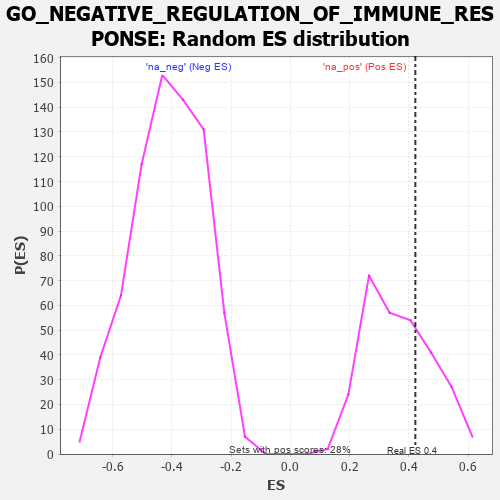

| | | Dataset | 7d |
| Phenotype | NoPhenotypeAvailable |
| Upregulated in class | na_pos |
| GeneSet | GO_NEGATIVE_REGULATION_OF_IMMUNE_RESPONSE |
| Enrichment Score (ES) | 0.42212364 |
| Normalized Enrichment Score (NES) | 1.1611063 |
| Nominal p-value | 0.3028169 |
| FDR q-value | 0.52461904 |
| FWER p-Value | 1.0 |
Table: GSEA Results Summary
 Fig 1: Enrichment plot: GO_NEGATIVE_REGULATION_OF_IMMUNE_RESPONSE
Fig 1: Enrichment plot: GO_NEGATIVE_REGULATION_OF_IMMUNE_RESPONSE
Profile of the Running ES Score & Positions of GeneSet Members on the Rank Ordered List
| PROBE | GENE SYMBOL | GENE_TITLE | RANK IN GENE LIST | RANK METRIC SCORE | RUNNING ES | CORE ENRICHMENT | | 1 | TGFB3 | | | 49 | 2.654 | 0.2041 | Yes |
| 2 | FOXF1 | | | 176 | 1.136 | 0.2783 | Yes |
| 3 | DCST1 | | | 237 | 0.959 | 0.3467 | Yes |
| 4 | CNOT7 | | | 348 | 0.750 | 0.3923 | Yes |
| 5 | THOC1 | | | 507 | 0.627 | 0.4221 | Yes |
| 6 | ABR | | | 1812 | 0.335 | 0.2848 | No |
| 7 | FER | | | 2803 | 0.183 | 0.1748 | No |
| 8 | GPX1 | | | 3109 | 0.135 | 0.1472 | No |
| 9 | SMAD7 | | | 3369 | 0.093 | 0.1221 | No |
| 10 | CRK | | | 4139 | -0.031 | 0.0279 | No |
| 11 | DRD2 | | | 5088 | -0.221 | -0.0737 | No |
| 12 | OTOP1 | | | 6562 | -0.690 | -0.2042 | No |
| 13 | CCR2 | | | 7003 | -0.939 | -0.1851 | No |
| 14 | PARP3 | | | 7289 | -1.158 | -0.1291 | No |
| 15 | GRN | | | 7319 | -1.194 | -0.0382 | No |
| 16 | NLRC3 | | | 7574 | -1.515 | 0.0499 | No |
Table: GSEA details [plain text format]

Fig 2: GO_NEGATIVE_REGULATION_OF_IMMUNE_RESPONSE: Random ES distribution
Gene set null distribution of ES for GO_NEGATIVE_REGULATION_OF_IMMUNE_RESPONSE